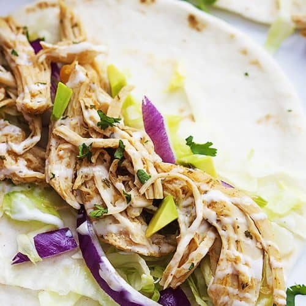

Ranch Chicken Tacos

Slow Cooker Cool Ranch Chicken Tacos – only 4 ingredients! Chicken slow-cooked in taco seasoning, ranch dressing mix, and chicken broth. Shred the chicken and serve in taco shells, tortillas, on top of a salad, or nachos. This is our FAVORITE taco filling! Can freeze any leftovers for later. Low-carb/keto-friendly and gluten-free too! Taco Tuesday never tasted so good!
- Ranch dressing
- Reduced-fat sour cream
- Packet taco seasoning mix
- Shredded rotisserie chicken
- Corn tortillas
- Green onion
- Combine ranch dressing, sour cream, 1 teaspoon taco seasoning, and salsa in a small bowl. Cover and refrigirate before serving.
- Toss chicken with remaining taco seasoning. Cover bowl loosely with wax paper or plastic wrap. Microwave chicken until chicken is heated through, about 2 or 3 minutes.
- Warm tortillas in a skillet for about a minute of each side to make them pliable. PLace a scoop of chicken on the tortilla and top with lettuce, tomato, green onion, olives, avocado, cheese, and a spoonful of the ranch dressing mixture.